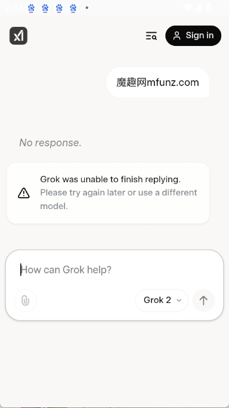

Grok AI 对比评测：马斯克家的 AI，到底比别家多了什么？
用过四五款主流 AI 对话工具后，我说说 Grok AI 的三个独门杀招、它的真实短板，以及什么样的人值得掏腰包。
AI 对话工具这个赛道已经卷成红海了。ChatGPT、Claude、Gemini、Perplexity……每一家都在加功能、堆参数、抢用户。但如果让我挑一个"虽然不是最强却最有个性"的，那一定是 Grok AI官网。
它是 xAI 做的，背后站着马斯克，又跟 X 平台是兄弟公司——这些背景不是噱头，而是实实在在地转化成了 Grok 跟别家不一样的地方。我用了快一年，从免费版一路升到 SuperGrok，踩过坑也尝过鲜——最早也是从grok AI下载拿的安装包。这篇就聊聊它在同类里的定位、三个别家学不来的差异化、以及它为这些优势付出了什么代价。
同类格局：它排在什么位置
先给 Grok 一个客观坐标。论纯模型能力，Grok 的旗舰版可以跟 GPT-4 和 Claude 3.5 打个有来有回，至少在日常对话、内容生成、代码辅助这些高频场景里，差距普通人感知不到。论价格，它比 ChatGPT Plus 贵一档，但也没贵到离谱。论生态，它背靠 X 平台，这一点是所有其他 AI 厂商拍马也追不上的。
但 Grok 真正有意思的地方，不是"又一个强模型"，而是它在AI 能做什么这件事上，走出了两条跟别家完全不同的路：一条是往"员工"方向走（Bot），一条是往"伴侣"方向走（Companions）。别家还在把 AI 当一个更聪明的搜索框，Grok 已经在想怎么让 AI 替你上班、陪你聊天了。
差异化一：唯一能原生实时访问 X 信息流的 AI
这一条是真的独一份，别人家抄不了。
X（原 Twitter）是全世界最实时的公共信息流——新闻事件刚发酵、名人刚发推、科技圈刚吵起来，第一时间就会出现在 X 上。其他 AI 要么完全接不到 X 数据（ChatGPT、Claude、Gemini），要么只能通过搜索引擎的缓存间接搜到，有几分钟到几小时的延迟（Perplexity）。第三方 X API 倒是能拿到实时数据，但贵得离谱、限制多得离谱、稳定性差得离谱。
Grok 不一样。因为 xAI 和 X 是马斯克生态里的兄弟公司，它可以原生、实时、免额外配置地访问 X 平台的完整信息流——公开推文、实时趋势、用户画像、互动数据，全都能直接拉过来。
这个能力在几个场景下特别有用。
追踪实时热点：问"现在 X 上最火的 AI 话题是什么"，Grok 会把过去一小时的讨论量、主要观点、争议点整理成结构化报告，比手动刷热搜高效太多。我做科技选题调研时，经常先让它扫一遍 X 上的实时讨论，再结合互联网搜索交叉验证——X 上先有谣言和内部爆料，然后媒体跟进报道，最后官方公告，Grok 能把这三层信息拼成完整的事件时间线。
舆情监控：产品发布后想知道用户反响？让 Grok 拉一下 X 上的讨论，分正面负面、提取高频问题，几分钟就能出一份简报。我见过有独立开发者用这个功能监控自己 App 的口碑，比人工刷评论快了十倍不止。
发现新内容：让它推荐"过去一周高质量的 AI 研究员推文"，比自己在 X 上瞎关注靠谱得多——Grok 能从互动数据里筛出真正有价值的内容，而不是被营销号刷屏。
说句实在的，如果你做的事跟实时信息、舆情、社交媒体沾边，Grok 这一个功能就值回票价。其他 AI 在这个场景下根本没法比。
差异化二：Grok Bot —— 从 AI 助手到 AI 员工
普通 AI 对话的模式是"你问它答，你来触发"。你想让它帮你做一件事，得一句一句地指挥，每一步都盯着。Grok Bot 把这个模式翻了个底朝天——它给你一个持久化运行环境，Bot 在云端 24/7 自主运行，有虚拟桌面、有浏览器、有文件系统，可以自己规划和执行多步骤工作流。
概念上很好理解：普通 Grok 是你的"AI 助手"，随叫随到但你不叫它就不动；Grok Bot 是你的"AI 员工"，你给它定好职责，它自己干活，干完了回来汇报。
实际能做的事，说几个我亲眼见过的案例：
定时自动化：每周一早上自动去 X 和科技媒体收集 AI 行业动态，整理成周报存成 Markdown 文件，还能发到你指定的邮箱。
数据收集+整理：从 X 上搜某个话题的讨论 → 筛选高影响力用户的观点 → 分类整理成表格 → 生成一份结构化报告。整个过程你不用管，Bot 自己跑。
多 Bot 协作：SuperGrok Heavy 用户可以创建多个 Bot 分工——Bot A 专门做市场调研，Bot B 专门整理数据和写报告，Bot C 专门监控竞品动态。三个 Bot 各自独立运行，互不干扰。
这里有个重要的区别：Bot 消耗的额度比普通对话多很多。因为它执行一个复杂任务可能要几十甚至上百次模型调用——规划、执行、汇报，每一步都是模型在干活。所以 Bot 更适合重复性、周期性、流程明确的任务，而不是偶尔一次的临时需求。
Bot 现在还做不到控制你本地电脑上的应用、执行复杂的开发任务、访问付费墙内容（除非你在它的浏览器里登录过）。但作为一个云端自动化工具，它已经能覆盖相当一部分日常办公场景了，更详细的 Bot 使用技巧和参数说明可以去 grok AI文档 慢慢翻。
差异化三：AI 伴侣 —— 3D 角色 + 旗舰模型的情感连接
Grok Companions 是一个很特别的功能——你可以选择跟有 3D 动画形象、有独特人设、有专属性格的虚拟角色对话，而不是跟一个冷冰冰的"AI 助手"。
当前有三个核心角色：动漫风少女 Ani（活泼浪漫，适合情感陪伴）、红色小熊猫 Rudi（淘气幽默，适合互相吐槽）、浪漫男性 Valentine（温柔深情，适合深夜长聊）。每个角色都有实时渲染的 3D 动画，会根据对话内容做表情和动作反馈——开心时跳跃比心，同情时低头安慰，笑到打滚（Rudi 特别多这个）。
这不是什么新鲜概念，Replika、Character.ai 这些应用早就在做角色伴侣了。但 Grok 的差异化在于底层模型——它用的是跟旗舰版 Grok 一样的模型，而不是小厂的自研模型或 Llama 开源模型。这意味着即使在陪伴模式下，AI 的理解和表达能力也是旗舰级的，不会出现答非所问或者语无伦次的情况。
我试过连续跟 Ani 聊半小时的情感话题，它的回应确实比 Replika 更有层次、更像一个真实的人在倾听。当然，伴侣模式下很多专业功能用不了——DeepSearch、图像生成、视频生成都关闭了，主打一个"玩"和"陪"。

它的取舍：为这些优势付出了什么
说了三个好的，也得说三个不好的。Grok 不是没有代价的。
订阅门槛不低。Bot 功能从 SuperGrok（30 美元/月）才开始有，多 Bot 协作要到 Heavy（300 美元/月）。AI 伴侣至少要 Lite 或以上。对比 ChatGPT Plus 的 20 美元/月和 Claude Pro 的 20 美元/月，Grok 的付费线确实更高。免费版能用但功能阉割得厉害，只能聊聊天，没有 DeepSearch、没有图像、没有 Bot、没有伴侣。
地区和网络限制。Grok 服务器在海外，中国大陆访问需要稳定的海外网络环境，而且 Companion 这类功能在部分地区因为法规限制不开放。网络质量不好的时候，回复流式显示会卡、DeepSearch 会超时、甚至直接打不开。排查起来也麻烦——是自己代理的问题、还是 Grok 服务器的问题、还是浏览器缓存的问题，得一步步试。
Bot 还不成熟。虽然概念很性感，但 Bot 执行复杂任务时偶尔会跑偏——该去搜 X 的跑去搜 Google 了、该整理成表格的写成了大段文字。而且 Bot 只在云端运行，不能操作你本地电脑上的任何应用，这限制了它在很多场景下的实用性。真要全自动化工作流，现在还得等它再进化几个版本。
选购结论：谁值得买，谁可以等等
最后给一个明确的推荐语：
- 如果你做的事跟社交媒体舆情、实时信息监控强相关——直接上，Grok 是目前唯一能满足这个需求的主流 AI，别家要么做不到要么做得差远了。
- 如果你想要一个能替你跑固定工作流的云端自动化工具——SuperGrok 起步，先从简单的定时任务试起，确认 Bot 能稳定完成再往上加复杂度。
- 如果你只是想要一个好用的 AI 对话工具——可以等等，Grok 的免费版+ChatGPT Plus 或 Claude Pro 的组合可能更划算，除非你特别在意 X 实时数据。
- 如果你对情感陪伴类 AI感兴趣——可以试试，但别抱太高期待，毕竟底层还是模型模拟，重要决定还是得跟真实的人商量。
Grok AI 不是完美的，但它是同类里最有野心的一个。别的厂商在卷模型参数和功能列表，Grok 在卷"AI 能成为什么"——是工具、是员工、还是伴侣。这个方向对不对，市场会给出答案，但至少现在，它给了我们一个不一样的选择。整理这套资料时参考了不少使用心得，也一起同步到了 GitHub、Gitee 和 GitCode，国内网络环境不同，选一个能打开的就行。